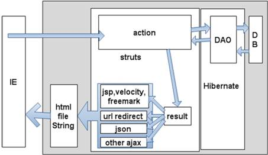
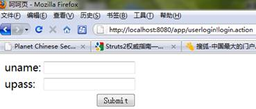
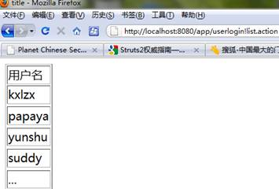
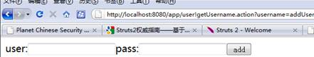
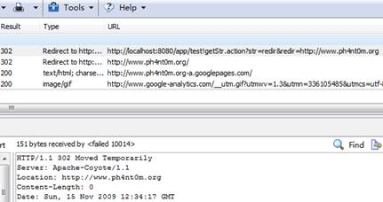
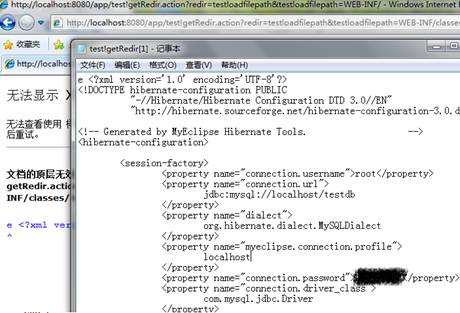

2010年01月20日 星期三 11:46 P.M.
struts2框架安全缺陷
文/空虚浪子心
http://www.inrbeak.net
voidloafer(某特殊字符)gmail.com
摘要：
本文介绍了java开发流行框架struts2以及webwork的一些安全缺陷，并举例说明框架本身以及开发人员使用框架时，所产生的种种安全问题，以及作者挖掘框架安全漏洞的一些心得体会。
推荐以下人群阅读：
了解java开发
了解框架开发
了解web application安全
“网络安全爱好者”
正文：
当前java开发网站，通常不会是纯JSP的，大都使用了java framework。
有了这些framework，让开发人员更加快速的开发出代码，也让代码非常具有可扩展性，那些分层架构的思想，更是深入人心。这些也大大影响了安全代码审核，曾提出“分层审核代码”的思想，比如在DAO层专门检查sql注入，在view层检查xss等。这些框架都有自己的层级，本次文章主要讲的是struts这个框架的相关安全问题，也会有小部分涉及到 struts后面的DAO层。
而struts这个框架更新占有市场份额极大的一个框架，它在各个层级中，位于如图所示位置：

http://www.inbreak.net/attachments/date_200912/c8756739a655b6a122f8c20e82dccd95.jpg
可以看到struts在web应用中，负责处理接收用户数据，调用业务处理，以及展示数据的工作。所以本文把struts的功能分为controller层和view层，controller层来完成接收用户数据，分发用户请求，而view专门用于展示数据。
一个单独的struts，是不合逻辑的，因为架构师通常喜欢多种框架集合，让它们各自负责某一层的处理。研究一个框架的安全问题，不能仅仅站在框架的角度，还应该充分考虑到开发人员是如何使用这些框架的，他们最喜欢写什么样的代码，这样才能还原一个正常的、完整的web应用场景。
从搜索结果看，互联网中，绝大多数教程推荐struts+hibernate+spring这样的黄金组合，那么，我假设有一个应用使用了这个组合，以struts为重点，站在攻击者的角度，层层分析struts的设计缺陷。
Struts2开发回顾与简单学习
为了让大家回顾或者学习一下struts2，我们一起来建立一个action、jsp页面，做一个接收用户输入，之后处理一下，再展示出来给用户的过程，精通struts2的同学可以跳过此步。
-------------------------------------struts回顾start
首先建立action，叫做AaaaAction：
public class AaaaAction extends ActionSupport{
private String name;
public String getName() {
return name;
}
public void setName(String name) {
this.name = name;
}
public String execute(){
System.out.println("exe");
return SUCCESS;
}
public String bbb(){
System.out.println("bbbbb");
return SUCCESS;
}
}
请注意execute这个方法，让用户输入action的地址后，默认会访问这个方法。
之后配置struts.xml文件
<action name="aaaaaaa" class="net.inbreak.AaaaAction">
<result name="success">user/aaa.jsp</result>
</action>
配置这个文件后，当用户输入
http://www.inbreak.net/app/aaaaaaa.action
的时候，struts会负责让AaaaAction中的execute方法处理用户请求。
处理之后，该方法返回“return SUCCESS;”，struts又负责找到result的name是seccuess所指向的jsp页面。把该页面解析后，返回给用户。
而用户看到的就是aaa.jsp页面的html代码。
struts2继承了webwork的所有优点，其实等于是webwork的升级，如果开发人员想让用户直接访问action中的某方法，而不是访问默认的execute方法，只要定义一个方法叫做bbb，并且是public的，用户就可以直接输入
http://www.inbreak.net/app/aaaaaaa!bbb.action
直接访问了bbb方法。
那request中的参数如果接收呢？struts2 中，这个过程被包装了起来，使用非常方便，只要在action中定义一个属性，叫做public String name；。然后加入getName和setName方法，就可以像正常使用属性一样，接收到用户传递过来的变量。无论是get请求还是post请求，都可以使用这种方式接收用户输入。
整个过程就如此简单，现在大家对流程有了了解，我们就开始讨论正文，如果还是想了解更多，请自行google。
----------------------------------struts回顾end
Struts2安全缺陷
可以看到struts2在数据流向方面，有两个重点，一个是进入（in），一个是输出（out）。而我在做漏洞挖掘的思路，也是跟着这个数据的流程，开始分析的，下面我们就开始让数据进入。
Action属性默认值可以被覆盖缺陷：
在日常的java项目中，我们经常会遇到保存一个新的对象（比如注册一个用户），然后给这个对象赋予一些用户提交上来的属性值，在这里，只需要定义一个对象类：
public class User {
private Long id=0l;
private String name;
private String pass;
private Integer type=1;
。。。下面的get和set方法代码略
}
定义后，在action中，添加一个属性
User reguser;
用户注册的页面代码如下：
<form XXXXXXX>
<input name="reguser.name">
当用户提交这个form到action中后，struts2会负责自动映射reguser.name的值到reguser的相关属性（name）中，所以在execute这个方法中，就可以使用 reguser.getName()拿到用户提交的reguser.name的值。所以我们下面的代码就很简单了：
public String execute(){
add(user);
add方法，更简单了，因为我们项目中集成了hibernate，这个框架自动映射user类中的各个属性，自动组成insert语句。我们只要在add中调用session.save(user);就可以保存用户到数据库中。
前文提到那么多“简单”两个字，难道这些过程都是安全的而他给我们仅仅带来了方便么？
struts2只负责映射所有对象，他提供了form验证，也只能验证form中属性值的内容，比如email格式等，并不能约束用户提交其他属性上来，于是这就变成了十分危险的功能。
当User中有个属性type，代表User是否管理员时（1为普通用户，2为管理员），麻烦来了，攻击者在原来的注册表单中，新加入一个input，叫做
<input name="reguser.type">
然后输入值是2，把这个值一起交给action。在这个流程中，这个值，当然也会被自动带到数据库中，向下处理的逻辑中，这个用户，就已经变成管理员了。
当你看到了一个struts2或者webwork的应用，可以尝试使用属性攻击，修改当前表单，里面有所有你猜测到的属性，一并提交上来，就可能会影响整个逻辑，达到攻击目的。文中仅仅是一个例子，事实上，在数据传递的过程中，可以任意覆盖数据的默认值，本来就是一个危险的缺陷，而struts2和webwork这两个框架仅仅看到了它带来的好处，忽略了这方面基于安全性的考虑，仅仅关注了用户提交数据的正确性。对比在没有struts2这个功能的时候，我们却需要在action中一个一个的把需要的变量，从用户提交的request中解出来，一个一个处理，不可能出现这种安全问题。现在它包装了这个过程，自以为很方面，却出了严重问题。
Action中的方法被暴力猜解缺陷：
前文提到，有一种方法可以让用户访问action时，不访问默认的execute方法，而是直接访问其他action中的方法，条件是在action中，写一个public的方法。开发人员如果需要做一个登陆后，展示所有用户列表的功能，而他的一个“解耦合”的开发习惯，将在这里导致安全缺陷。
定义一个如下的action
public class Userlogin extends ActionSupport{
private String uname="";
private String upwd;
private List list;
//getter and setter 方法略
public String login(){
if(uname!=null&&upwd!=null&&uname.equals("kxlzx")&&upwd.equals("pass"))
{//if login success
return list();
}
return false;
}
public String list(){
list.add("kxlzx");list.add("kxlzx1");list.add("kxlzx2");list.add("kxlzx3");
return "list";
}
}
Userlogin中，因为list这个功能（显示所有用户列表），其实是一个通用的功能，很容易被其他地方调用，所以开发人员把它单独写成了一个方法。
当用户登陆的时候，打开
http://www.inbreak.net/app/userlogin!login.action
来到了用户的登陆页面，可以看到，只有用户输入正确的用户名和密码，才能最终调用list()方法，显示结果。

http://www.inbreak.net/attachments/date_200912/ff44a572799db83ab145844bb426215c.jpg
但是struts2把所有public的方法都暴露了出去，导致现在用户输入了
http://www.inbreak.net/app/userlogin!list.action
用户访问这个链接后，struts2调用list方法，然后返回结果给用户，所以没有登陆，就显示了所有用户信息，直接绕过了login中的登陆验证。

http://www.inbreak.net/attachments/date_200912/fc690432c68b2abe641b34f89fafae4b.jpg
在没有struts2的时候，我们要在servlet 的doget或者dopost方法中，写if判断等代码，才能让用户调用其他servlet中的方法，现在看来其实这也是一种保护措施。而现在 struts2为了方便开发，把所有的public方法统一映射了出去，导致开发把一个经常使用的功能，习惯写成一个public的方法，现在居然成了严重漏洞。
struts2的action属性设计缺陷：
再回头看看我们在action中的属性定义，你会发现，现在他们都成了漏洞，因为struts2规定属性的get和set方法，都必须是public的。
那么我们定义了
private String name;
public String getName() {
return name;
}
public void setName(String name) {
this.name = name;
}
这段代码的时候，实际上，是写了两个public的方法。
那这两个表面上没有任何实质含义的方法，会有什么安全隐患呢？
这需要和前文联系起来，前文提到，我们在struts.xml文件中，定义如下：
<action name="user" class="net.inbreak.UserAction">
<result name="success">user/userlist.jsp</result>
<result name="addUser">user/addUser.jsp</result>
<result name="added">user/added.jsp</result>
<result name="false">user/false.jsp</result>
</action>
这段代码含义是，UserAction中，任何一个方法执行后，如果返回的是success这个字符串， 就会把user/userlist.jsp返回给用户。
如果返回是addUser，就会把user/addUser.jsp返回给用户。
现在UserAction是管理用户的页面，在我们的系统中，有普通管理员和超级管理员，他们的区别是普通管理员可以查看用户，但是不能添加一个用户。
所以，我们在UserAction中，写了
public String addUser(){
if(true){ //事实上这里是个超级管理员的判断，我偷懒了。
return "false";
}
return "addUser";
}
这个方法的代码判断了不允许普通管理员访问，但是user/addUser.jsp这个jsp页面中并没有这个判断逻辑。因为开发认为只有返回addUser的时候，才会来到这个页面，而要返回addUser，则必须通过超级管理员的验证。
那我们能让一个方法返回addUser么？当然可以！
http://www.inbreak.net/app/user!getUsername.action?username=addUser
这个链接，struts2会怎么处理呢？
他会找struts.xml中，对应段路径user，于是找到了对应的处理Action（net.inbreak.UserAction），由于路径中有了“!getUsername”，于是就去找这个 Action中的getUsername这个方法，很明显，这个方法其实是username这个属性的get方法，如果你要让Action接收用户提交的 username，你就必须要定义这个方法。
那这个方法会返回什么呢？会返回action的字段 username的值！哈哈！username用户已经提交给action了，链接后面写着“?username=addUser”，struts2把这个值赋予了action中的username属性。那这里返回的当然就是“addUser”！

http://www.inbreak.net/attachments/date_200912/15328b207eb9b98be458690e284dbd7b.jpg
一系列巧合后，导致现在给用户返回了user/addUser.jsp页面，这是一个添加用户的表单页面，并且用户没有去走验证是否为超级管理员这一步。
现在用户看到了一个添加用户的页面，他有两种攻击思路：
1，直接提交，如果处理用户提交的那个action没有再次判断用户身份，那就提交成功了。
2，如果他判断了用户身份，我们还可以csrf他，因为我们知道了这个action的地址，和它需要的参数！
由于struts2的action和jsp文件分离，导致开发人员往往会在action的方法中，执行权限判断，而jsp页面中并没有再次执行这个判断，他以为action判断就够了。而偏偏action的属性，给我们带来了一个可自定义返回result的方法，导致我们可以绕过action访问jsp页面。
Struts2的那些result类型缺陷（redirect）：
刚才我们领教了struts2给我们带来那些属性的好处，现在我们再往后走一步，研究Action方法的返回结果。
其实并不是只由String类型的返回结果，struts2还有其他类型的返回，比如“redirect”类型。
<action name="test" class="net.inbreak.TestAction">
<result name="false">user/false.jsp</result>
<result name="redir" type="redirect">${redirecturl}</result>
</action>
这段代码，大家唯一可能看不懂的，就是type="redirect"了。
这是一个url redirect的方式，struts2为了方便大家开发，把“自定义302跳转到其他url”这种方式给包装了起来。只要如上定义，我们就可以在action中写方法：
public String redirect() {
return "redir";
}
然后定义属性
private String redirecturl;
当用户打开
http://www.inbreak.net/app/test!redirect.action?redirecturl=/a.jsp
的时候，就会302跳转到
http://www.inbreak.net/app/a.jsp
这是很常见的url跳转应用，在struts2中，如上配置一下，就可以实现。
相信明眼人都看出来了，很明显这里存在url跳转漏洞，如果用户输入了
http://www.inbreak.net/app/test!redirect.action?redirecturl=http://www.ph4nt0m.org
就会跳转到http://www.ph4nt0m.org这个钓鱼网站(-_-!)。那么如何防御呢？
文章有点长，不知道大家被我绕晕了没有，请先去休息下，思考前文内容是否看懂了。
书接上文，要防御url跳转到钓鱼网站，我们肯定需要一个白名单机制，或者根本就让他跳转到本站下。于是有了如下判断：
public String redirect() {
if(redirecturl.startsWith("/"))
{
return "redir";
}
return "false";
}
可能你看出来了，仅仅判断"/"开头，其实是不能杜绝url跳转漏洞的，因为
http://www.inbreak.net/app/test!redirect.action?redirecturl=//www.ph4nt0m.org
一样会跳转。而在这里却足够了，因为struts2已经接管了这个过程，只要以“/”开头，统统先给你自动加上本地域名，抓包后，你会看到
location: http://www.inbreak.net/app//www.ph4nt0m.org
实际上是不会有问题的。
struts2也认为这样判断不会有问题了，然而用户输入
http://www.inbreak.net/app/test!getStr.action?str=redir&redirecturl=http://www.ph4nt0m.org

http://www.inbreak.net/attachments/date_200912/73c3a69afd004f905dc117e3bb4912da.jpg
其实前篇已经分析过了，这样就利用action中的str属性，绕过了必须以“/”开头的判断，直接跳转了。
test里有个str属性，可自定义返回，这里自定义了“redir”，所以来到了
<result name="redir" type="redirect">${redirecturl}</result>
而redirecturl的值，也提交给了action，所以跳转了。
Struts2的那些result类型缺陷（Ajax）：
在struts2中使用ajax，也是被 struts2支持的，它提供了一种返回类型，叫做“stream”。在研究这个result的使用时，作者看到一本书，叫做《 Struts 2权威指南：基于WebWork核心的MVC开发 》。这本书非常出名，几乎所有的struts2使用者都推荐使用。
http://book.csdn.net/bookfiles/479/index.html
书上介绍ajax可以这么使用：
配置struts.xml
<action name="ajaxtest" class="net.inbreak.ajax.TestajaxAction">
<result type="stream">
<param name="contentType">text/html</param>
<param name="inputName">input</param>
</result>
</action>
之后写TestajaxAction：
public InputStream input;
public String execute() throws Exception{
input = new StringBufferInputStream("aaaa<td><script>alert("kxlzx")</script>aa");
return SUCCESS;
}
其实大家都看出来我的意思了，返回了contentType为“text/html”的页面，内容为
aaaa<td><script>alert('kxlzx')</script>aa
结果浏览器解析的时候，出现了XSS漏洞。
本来默认的contentType是text/plain，不需要配置，如果用户直接打开，只会看到一个Stream，不会解析其中的html和js。现在书上介绍说要写成这样，不知道作者是否知道这个教程对大家的影响，结果已经误导了大批的开发人员。
事实上，这不是struts的问题，是struts“权威”教程的问题。权威的教程，一旦出现安全漏洞，往往会误导大批的开发人员，不知道大家在挖漏洞的时候，是否注意到了这点，特别是当官方的DEMO出现漏洞，那绝对是惊天地泣鬼神的悲剧。
Struts2的那些result类型缺陷（自定的页面）：
有时候，开发人员为了方便，喜欢配置struts.xml如下：
<action name="test" class="net.inbreak.TestAction">
<result name="success">user/test.jsp</result>
<result name="testpro">user/testproperty.jsp</result>
<result name="redir" type="redirect">${redir}</result>
<result name="testloadfilepath">${testloadfilepath}</result>
<result name="false">user/redirfalse.jsp</result>
<result name="input">user/input.jsp</result>
</action>
请注意，其中一条result，名称是”testloadfilepath”，${testloadfilepath}的作用是自定义的jsp页面地址，接收session或request中传过来的这个变量的值。那么用户提交
http://www.inbreak.net/app/test.action?testloadfilepath=user/test.jsp
当然就会返回user/test.jsp页面，非常的灵活。虽然并不是所有的开发都会这么做，但是一旦出现这种情况，会产生什么问题呢？
http://www.inbreak.net/app/test!getRedir.action?redir=testloadfilepath&testloadfilepath=WEB-INF/classes/hibernate.cfg.xml
不知道大家看懂这段url的含义没有，先调用 getRedir，可以自定义返回到testloadfilepath，而testloadfilepath已经指定了WEB-INF/classes /hibernate.cfg.xml。WEB-INF目录下，都是受web容器保护的东西，默认不允许直接request相对地址来访问。该目录里面有程序编译后的class文件（可以被直接反编译为java源码），有数据库配置文件等敏感文件，现在打开如上url，直接被下载了 hibernate.cfg.xml，这里放着数据库用户名和密码。

http://www.inbreak.net/attachments/date_200912/b7f2fe416b96eac957550fa12ae7f668.jpg
这样，攻击者就可以下载你的所有源代码，所有服务器上的文件。struts在提供给我们这种方式的时候，并没有任何官方说明这里有危险，这就是一个不定时炸弹。